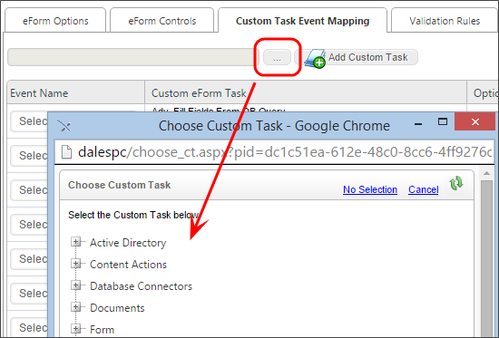

Process Director supports the ability to package unique business logic in the Custom Task that can be mapped to Form events (e.g. buttons). This allows custom logic to be developed once with the scripting interfaces and re-used across many Form definitions without any additional scripting. For information on creating custom tasks for Form see the Process Director Developer’s Guide for more information.
Form Custom Tasks are mapped to Form events. For example, Custom Tasks can cause the display of a Form, or Custom Tasks can be set to respond to a change in Form data. This will cause the Custom Task to be run in the context of the current Form. The Custom Task can view and modify any of the current form data.
A custom task must be associated (mapped) to an event. The following events are available:
|
EVENT |
WHEN THE EVENT RUNS |
|---|---|
|
Form Creation |
When the form is first opened by Process Director and prepared for display. |
|
View State Init |
When the Form's View State is initialized. |
|
Before Conditions |
Before any form conditions are resolved. |
|
After Conditions |
After all of the form's conditions are resolved. |
|
Before Validation |
Before form validation rules are run. |
|
After Validation |
After all form validation rules have been run. |
|
Form Completed |
When the Form is marked as complete and closes. |
|
Form Display |
When the Form is displayed. |
|
Event |
Any form control set as an event control is changed. |
A complete list of events that fire during a form's life cycle can be found in the Events section of the Form Class documentation topic in the Developer's guide.
To associate a custom task with an event, click the Custom Task Event Mapping tab on the Form's definition. From the Custom Task Event Mapping tab, click the Build button of the picker control that is located to the left of the Add Custom Task button at the top of the tab to open the Custom Tasks dialog box.

From the Custom Task dialog box, navigate through the treeview to fine the custom task you desire, then click on the task to select it. The dialog box will close automatically.
After the dialog box closes, the name of the custom task you selected will appear in the picker control. Click the Add Custom Task button to add the mapping to the form.

Once the mapping has been added, select the event you desire to map from the Event name Dropdown in the mapped even line.

The dropdown will display all of the standard form events, as well as the control names of any control you have identified as an event field. If the control event you wish to map does not appear, then you must return to the Form Controls tab, and set that control as an event control. Once you have selected the event you wish to map, you may enter a brief description of what the custom task will do in the text box labeled "Set Form Data:". Now, click the Configure button to open the configuration dialog box for the Custom Task.
Each Custom Task has a specific dialog box, in this example we will show the configuration dialog box for the Set Form Data Custom task. Specific configuration dialog boxes will be discussed below for each of the Custom Tasks.

Make the appropriate configuration changes in the Custom Task's configuration dialog box, then click the OK button to close and save your configuration changes.
Finally, set any conditions that you'd like to impose on the Custom Task to control when it runs.